一、方案调研 · 架构 · 原型 · 开发计划 · 2026-11-04
二、Demo 初步研发与测试五模块 · 模拟环境 · 六轮实验 · 七喵接上 AI · 2026-11-18
三、产品现状学生会经历什么 · 里面有什么 · 验过和没验的 · 2026-11-18
词猎产品现状
词猎现在是一个用手机浏览器打开的背单词应用，给初中生和高中生用。一个学生从第一次打开，到每周给家长看一封信，这条路已经全部做出来并放到了线上。还没有一个真学生用过。
2026-11-18 写 · 说的是这一天线上的版本 · 怎么一步步做到这里的，见前两个标签
现在到哪一步
学生会经历什么
里面有什么
家长和我们看到什么
第一轮试用怎么做
验过的和没验的
已知的毛病
还没做的
现在到哪一步先说结论
能用了，但只有我们自己用过。 应用已经部署在一台国内的服务器上，学生拿到一个 6 位的试用码就能进。背单词、排复习、游戏画面、AI 写的内容、给家长的信、我们看数据的后台，都接通了。
下一步是找真学生试两周左右。 这份说明里凡是写「有没有用」的地方，答案都还是「不知道」，要等这一轮试用。
3554 个词
要教的词。照教育部现行的高中英语课程标准的词汇表来定，初中和高中都在里面。
7 × 5 层
游戏画面是七个宇宙，每个宇宙五层，一层装大约一百个词。
7 样
一条叫七喵的金鱼出面做的事。其中六样的内容是大模型写的，一样是按规则排的课表。
0 个
用过它的真学生。也还没有在真手机上打开用过。
词猎最初的设想是一台专用的小设备。现在做的是它的软件版，先用软件把「怎么教、怎么排复习」验清楚，设备放在后面。
一个学生会经历什么按先后顺序，配的是应用里实际的画面
第一次打开
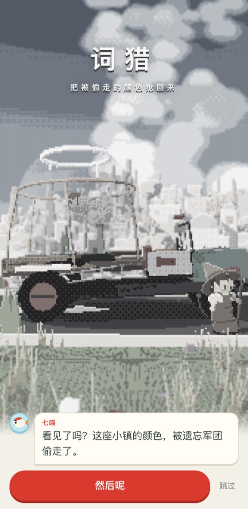
开场。七喵说小镇的颜色被「遗忘军团」偷走了 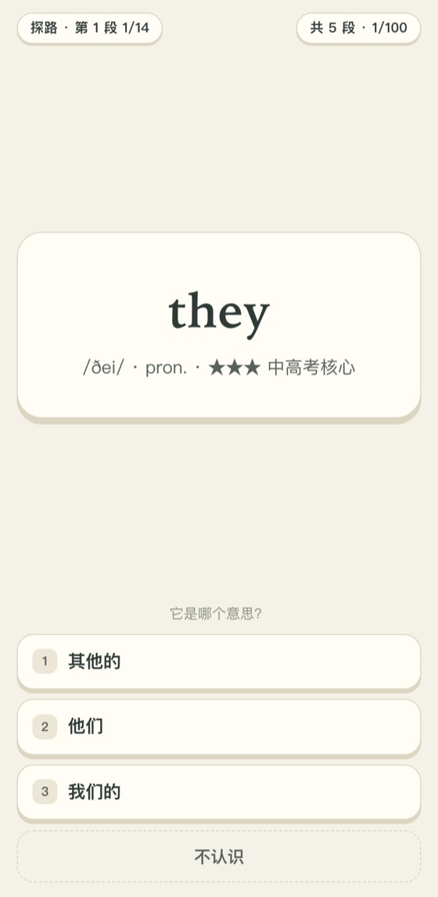
探路的一道题 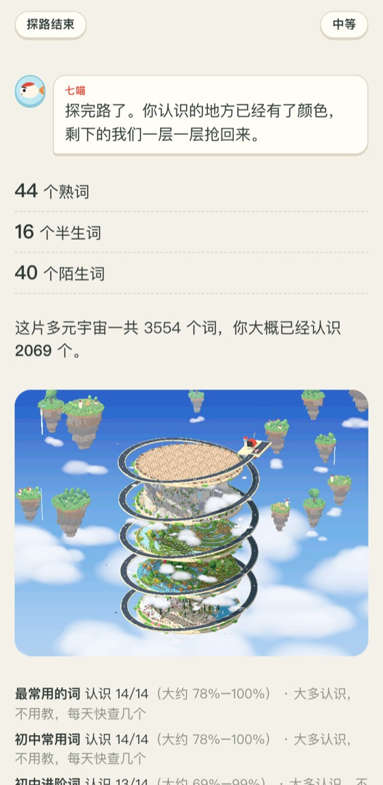
探路的结果
看一段开场，输试用码，起一个花名。 花名是学生给自己起的名字，不用真名。我们在后台靠它认人。选初中还是高中。 探路。 也就是摸底：先弄清这个学生已经认识哪些词，认识的就不再教。每道题给一个英文词，下面三个中文意思，外加一个「不认识」。初中 60 题，高中 100 题，大约十分钟。看结果。 结果页告诉学生三件事：
这些题里有多少熟词、半生词、陌生词。选对而且不慢的是熟词。选对但慢的是半生词，慢是和他自己这次探路里答对时一般用的时间比。选错或者点了「不认识」的是陌生词。半生词现在只是记下来，教法和熟词一样，等有了真人的数据再决定要不要让它们早点回来复习。
要教的三千多个词里，估计他已经认识多少个。
词按难易分成五档，每一档他认识几成、这一档还教不教。认识八成以上、而且这个数靠得住的档，整档不教，只在每天开头快查。靠不靠得住看两样：一档只问十几二十道题，算出来的「几成」本身有上下限，下限太低的不算；这次探路答得不认真的也不算。
每天
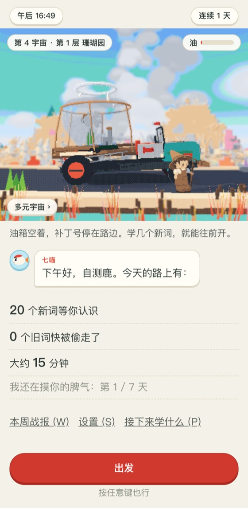
首页 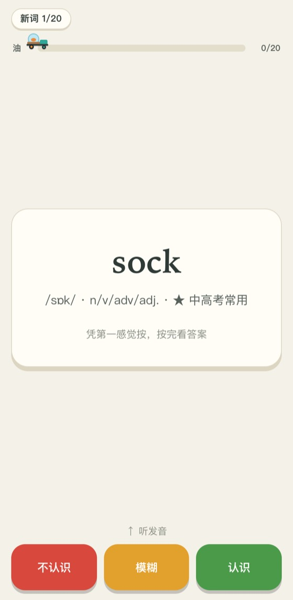
一张卡片，三个按钮 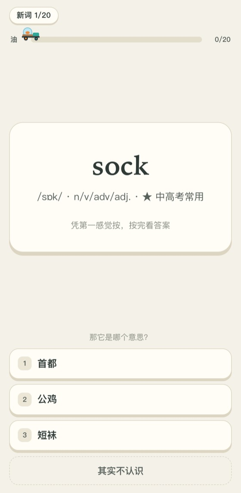
按了「认识」，还要选对意思 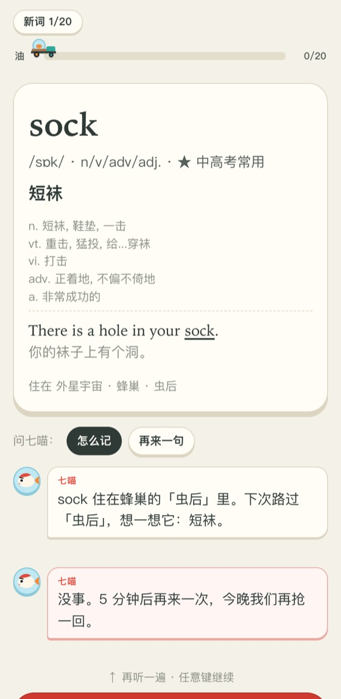
答完看到的一页，和「问七喵」
打开是首页。 一辆皮卡停在路上，它停的位置就是学到哪儿了。下面写着今天有多少新词、多少旧词到了该复习的时候、大约要多少分钟。按「出发」开始。先快查。 探路时整档不教的那些词，每天开头拿 20 个出来过一遍，这叫快查。快查里不认识的，排到新词前面去教。快查下来发现这一档其实没到八成，这一档就改回要教。再学。 屏幕上出一个英文词，学生在心里想它的意思，然后按三个按钮之一：不认识、模糊、认识。
按「认识」不能白按：还要从三个中文意思里选出对的，选错就按不认识算。
每答完一个，看到这个词的意思、一句例句、它在游戏里「住」在哪儿。
按了不认识的词，5 分钟后再问一次。按了模糊的，30 分钟后再问一次。
每天新词 20 个。哪个旧词哪天回来复习，由排复习的算法定，学生不用管。
答错可以问七喵。 那一页上最多三个按钮：「怎么记」「和某个词有什么不同」「再来一句」。学生不用打字，点了就出答案。这不是当场和 AI 对话：答案是夜里提前写好的。还没写到的词，「怎么记」给的是一句固定格式的话（上面最后一张图就是），「再来一句」用词库里现成的例句，没有对比卡的词就不出现「有什么不同」这个按钮。当天没过关的词，晚上集中再过一遍。 晚上八点以后第一次打开，或者一口气学了 25 分钟，就会出现。
路上的东西
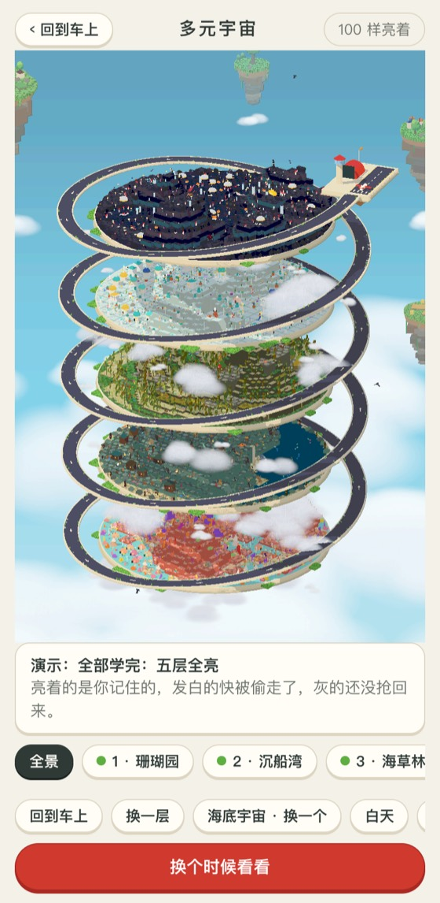
一个宇宙的五层 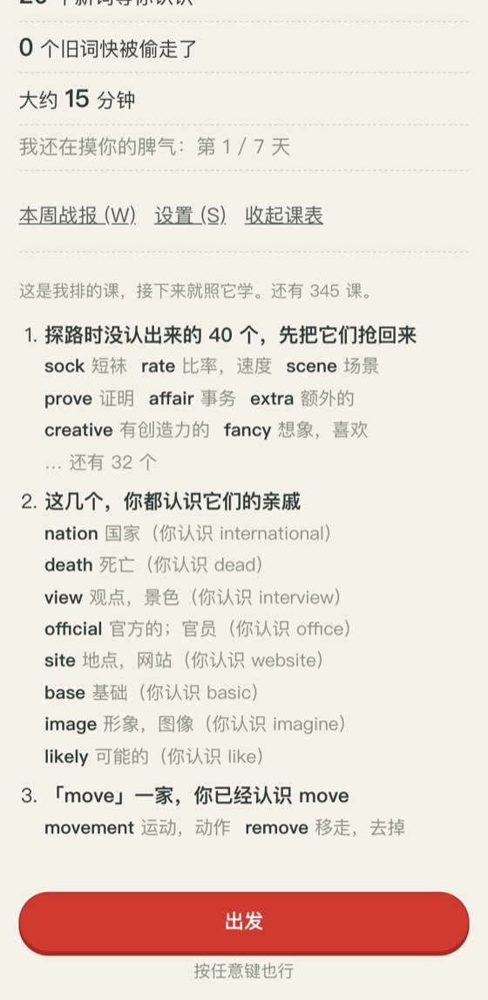
「接下来学什么」 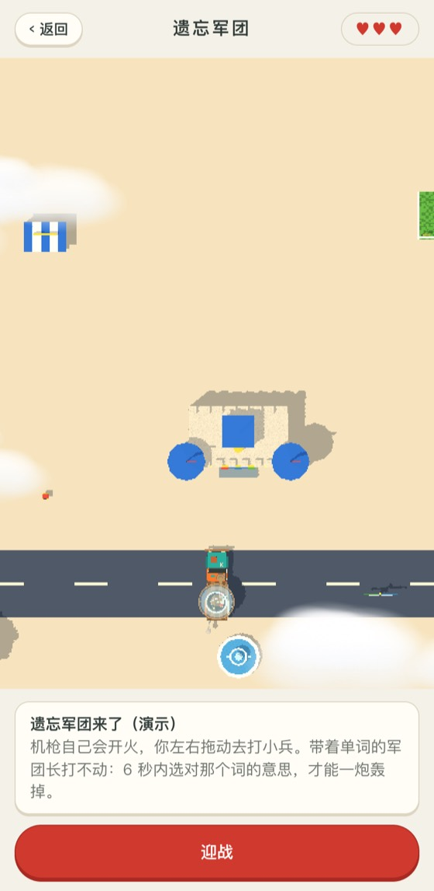
突击检查 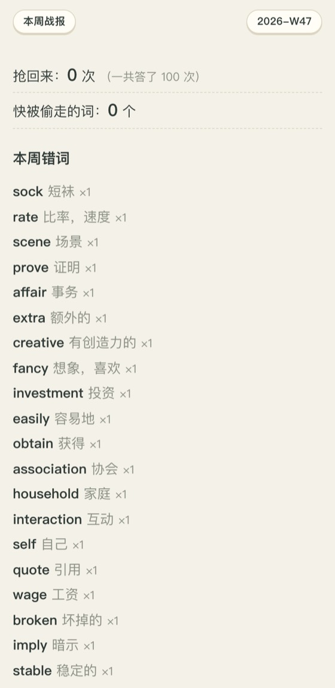
本周战报
游戏画面。 七个宇宙：现实、魔幻、外星、海底、远古、未来、仙界。每个宇宙是五层浮在空中的圆盘，一条公路把它们串起来。每层有二十样东西，一样东西管大约五个词。学生记住的词越多，东西的颜色越亮；快忘了，颜色就褪下去。课表。 首页点「接下来学什么」能看到七喵排的课。一课最多八个词，每一课写着为什么这么排，比如「这几个，你都认识它们的亲戚」。有一半的层，新词照这个顺序出；另一半的层照老办法，按常用程度从常用到不常用出。为什么留一半，见第一轮试用怎么做 。突击检查。 和每天开头的快查不是一回事，它是一小段游戏。有三个以上学过的词快忘了的时候，按「出发」会先来一小段游戏：皮卡起飞，对面的「遗忘军团」带着单词过来，6 秒内选对意思才能打掉它。一天最多一次。答得怎样只给学生看，不拿去改复习的安排。本周战报和周日的故事。 战报列出这一周答了多少、哪些词错得最多。每周日，七喵用这一周错得最多的十来个词编一篇两百来词的小故事，带中文翻译。学满 7 个活跃日，七喵说「我看到了什么」。 活跃日是当天真的学了的日子。到这一天，应用第一次告诉学生它看出来的东西：他忘得快还是慢，哪一类词是软肋。在这之前它直说「我还在了解你」。可以从头再来。 设置页最下面有一个「重置学习数据，从头再来」。按了回到第一次打开的样子，试用码和花名留着。以前的答题记录我们这边不删，只是不再算数。
里面有什么学生看不到、但决定了它怎么教的东西
哪一块 现在是什么样 靠得住吗
词库 一共 3985 个词，要教的 3554 个。以教育部《普通高中英语课程标准（2017 年版 2020 年修订）》的词汇表为准：表里的词收进来 2940 个，加上它们的变形 614 个。剩下 431 个是旧考试大纲留下来的，留在库里但不教。 词表是官方的。每个词给学生看哪一条中文意思、哪些词算一家，是大模型定的，没有第二个人核对过。 给词分的类 每个词有三个标签。年级档：按课标的分级分成五档，从最常用的到高中选修的。主题：饮食、交通这一类。词根家族：共用一个词根的算一家，比如 move、movement、remove，现在有 792 家。 分类有没有帮助，要看真学生的数据。看哪个数、到多少才算有用，已经事先写下来了，在第二个标签的「给词分类」一节。 摸底 每一档按词数的多少抽题。除了「认识几成」，还算三样：这个数的上下限（题少，上下限就宽）；蒙对的成分（三个意思里瞎选，大约错两次才对一次，所以每选错两次，就从认识数里减一个）；认不认真（按得太快、一直不按、老点同一个位置，这次摸底就标成不太可信，一档都不跳过）。 几条线都是先定下来的起点。判错了能改回来，靠每天的快查。 排复习 用的是一套公开、免费的算法，叫 FSRS。它根据每次答得怎样，估计这个词多久会忘，赶在忘之前安排复习。目标定在「到复习那一刻，还有九成三的把握答对」。 这是用假学生做了六轮实验之后定的，过程在第二个标签里。假学生不是真人，所以真人身上还要再看。 七喵和 AI 七样：带着他最近错词的例句、形近词对比卡、周日的错词故事、记法、问七喵、排课、给家长的周信。除了排课是按规则算的，其余由大模型（现在用的是 DeepSeek）在夜里写好，程序自动审过才给学生看。学生用的时候不会当场去问模型。 线上用真的大模型完整跑通过一遍。写出来的内容只过了程序的审核，没有人逐条看过。 数据记录 每一次答题都记：哪个词、按了什么、用了多少毫秒、当时是新词还是复习。每一页内容看了多久也记。断网时先存在手机里，联网后补传。 试用开始前专门查过一遍，查出 14 处会不全的地方，当天都补上了。另有一样没记：学生是哪一刻起的花名，不影响结论。
「记法」是什么：大模型写的一句话，把一个词和它在游戏里住的那样东西连起来。比如 abandon 住在远古宇宙的「喙嘴龙」那里，记法是「喙嘴龙 abandon 了巢里的蛋，独自飞走」。一个词被按过两次「不认识」才写。这个办法灵不灵，没有证据。
家长和我们看到什么
家长
学生在本周战报里点一下，得到一个链接，发给家长。家长打开不用登录、不用装东西，能看到这个孩子这一周学了几天、学了多少新词、最难记的是哪几个，和七喵写的四五句话。只能看到这一个孩子。
信里的每个数字，都必须是程序给模型的那几个数之一。模型多写出一个没给过的数字，整封信作废，换成一封固定格式的。这是为了不让家长看到编出来的进步幅度。
我们自己
有一个只有我们能进的管理后台，做四件事。老师现在没有自己的入口，要看学生的情况，得由我们从后台取出来给。
发试用码。 一个码就是一个学生，可以按学校、班级批量生成。看每个学生的状态。 用没用过、摸底做完没有、今天学了没有、几天没来、学了几天、答了多少题、摸底可不可信。管大模型。 填模型的访问密码、试一下连不连得上、换成别家。还有一个开关，能把「照课表出词」一下子关掉。把全部数据导出来。 每一次答题、每一次阅读、每个账号的摸底结果、被服务器拒收的记录。
第一轮试用怎么做已经在应用里安排好的部分
学生拿到试用码的那一刻，就被分进了三组之一。分组是按码轮着发的，学生自己不知道。三组用同一套排复习的算法，差别只在每天做多少题：
组 每天做多少 想回答的问题
不封顶 到期多少做多少 对照 只封顶 最多做到他自己的上限，到数就显示「今日任务完成」 每天有个「做完了」，会不会更愿意来 固定题数 每天正好做到上限。到期的不够，就拿快到期的来凑 每天一样多，会不会更愿意来、记得更牢
上限每人不一样：取他头 7 个活跃日每天题量的中间值，取整到十位，最低 60 题，定下之后不再变。所以头 7 个活跃日三组做的事完全一样，第 8 个活跃日起才分开。
这一轮下不了「哪一组更好」的结论。 试用打算做两周左右。天天学的孩子，三组有差别的日子也只有七天上下。这一轮真正能看清的是别的：孩子来不来，摸底判得准不准，七喵写的东西有没有人看，课表有没有人点开。要认真比三组，得做四周以上。
除了三组，还留了一个小对照：同一个孩子，隔一层照七喵的课表教，隔一层照老办法按常用程度教，之后可以比哪些层的词记得牢。每天 20 个新词，两周只够学两三层，所以这一轮也只看得出个大概。
还没定的：找哪所学校、哪个年级、多少个学生，哪天开始，怎么告诉家长并征得同意。这几样定下来之前，试用开始不了。
验过的和没验的
什么 到什么程度
验过 自动测试四套全过：手机端 240 项，服务端 78 项，词库 37 项，测试台（跑假学生的那套程序）90 项。第二个标签里写的 236 和 76 是当天早些时候的数。 验过 让电脑上的浏览器像新用户一样从头走：输码、起名、选高中、答完 100 题、看结果、回首页、点开课表、答题、答错、问七喵、打开战报、重置再来。每一步截图看过。 验过 在线上建一个临时账号，放进几天的答题，让夜里的任务提前跑一次，再用学生的身份把例句、对比卡、故事取回来，用家长的链接打开家长页。跑完把账号删掉。 只在假学生身上验过 30 个假学生、90 天、六轮实验。假学生是一段模仿学生怎么记、怎么忘的程序，没有拿真人数据校准过。 没验 还没有在任何一台真手机上打开用过。各家手机的浏览器、断网、切到别的应用再回来，都只在电脑上试过。 没验 已经设好：每天凌晨三点半写例句、对比卡和记法，每周日凌晨四点半写故事和周信。设好之后还没到过点，第一次自己跑是 11 月 18 日夜里。 没验 摸底准不准、记法帮不帮得上、课表好不好、孩子愿不愿意天天来、游戏画面是吸引人还是分心。全都要等真学生。
已知的毛病知道有、还没修的
设置页露着两样学生用不着的东西。 「服务器地址」和「调试模式」是给我们自己用的，现在学生也看得到、也改得了。发音是手机自带的朗读。 没有预先录好的声音，不同手机读出来不一样，有的手机可能读不出来。游戏里的二十样东西偏小。 和周围的小房子比不够显眼，学生不容易认出「这个词住在哪样东西里」。开往上一层没有画面。 一层学完，皮卡怎么自然地开到上一层，还没定。课表只存在手机里。 换一台手机，课表会重新排一遍，和原来的不一定一样。学过的词和进度会跟过来。一个词只能算进一个词根家族。 passport 只算 port 一家，丢了 pass。苹果手机的浏览器，七天不打开会清掉手机里存的数据。 已经传到服务器的记录不受影响，重新输试用码能拿回来；还没传上去的那一点会丢。
还没做的
让学生自己造句，七喵来判。 七喵记得上周说过什么。 现在它每次都是从头说。课表里加上考试日期。 离考试还有几周，这几周先学什么。两张统计表。 一张看「照课表教」和「照原顺序教」哪个记得牢，一张看摸底判得准不准。数据在记，表还没做。初中的新课标。 初中另有一份 2022 年的课程标准，还没拿来和词库对。月份、星期、国家这类词。 课标里有，词库里没收。周六闯关、假期模式、考前模式。 最初设想里有，没做。微信小程序。 现在只能用浏览器打开。专用设备。 最初设想的那台带实体按键的小设备，要等软件版在真人身上验过再说。
应用的地址、试用码和管理后台的地址不写在这一页上，另外单独发。
词猎 · 产品现状 · 2026-11-18。这一页只说现在是什么样。每一样是怎么定下来的、数字从哪儿来，在「二、Demo 初步研发与测试」里。